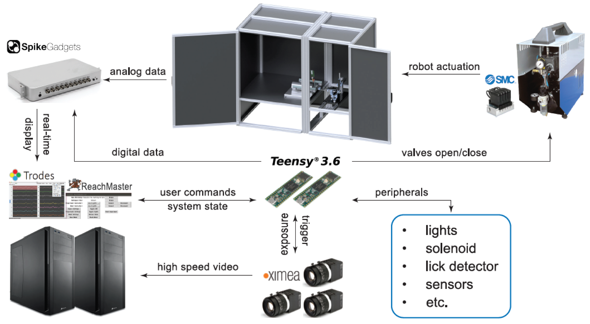

Overview¶
Here we provide a broad overview of the system to give a basic sense of the different components and their functions. More detailed descriptions are provided in the following sections.
The above image is a graphical representation of the system. The main enclosure, which houses the experiments, can be found at top center of the image. It is made up of two compartments. The leftmost is a behavioral compartment which houses the animals. The rightmost houses the robot and other peripheral hardware (i.e., lights, solenoid, etc.). The robot is powered pneumatically by an air compressor and high speed valve circuit which can be found in the top right part of the image. Highspeed video of the animals interacting with the robot is recorded by multiple synchronized USB3.0 cameras. All of the hardware is controlled by two microcontrollers (e.g., Teensy 3.6). The experimental microcontroller is responsible for implementing experimental logic, controlling the timing of discrete events (i.e., lights on/off, reward delivery, etc.), and synchronizing data streams (i.e., video, neural, etc.). The robot microcontroller is responsible for controlling the valve circuit, and is used for robot calibration and position control. The experiment and robot microcontrollers are both operated via serial communication with the ReachMaster graphical user interface. All of the analog and digital data generated by the various components are recorded by the SpikeGadgets daq, and visualized in real-time using the SpikeGadgets Trodes software.

{kind=link}